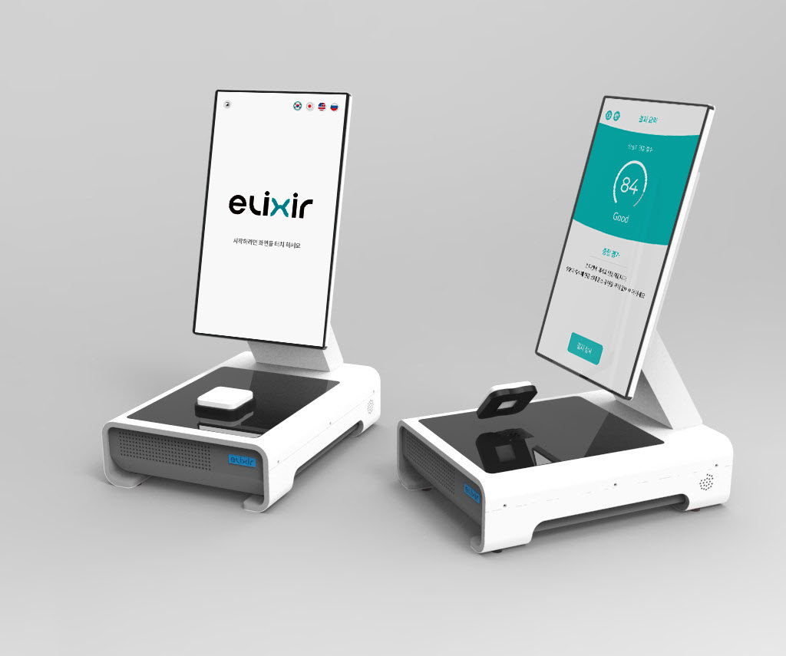

㈜바이오팝코리아 · 대표 프로젝트
엘릭서: 비침습 혈당 측정 서비스 ADMIN 기획
비침습 혈당 측정 기기를 여러 국가에 설치해 운영하기 위한 ADMIN의 화면, 권한, 상태값, 예외 처리를 기획했습니다.
서비스와 기기
근적외선(NIR) 센서로 채혈 없이 혈당을 측정하는 기기와 소프트웨어입니다. 이용자는 앱으로 결과를 확인하고, 설치 기관은 ADMIN에서 기기와 계정을 관리합니다.
24,000건+수집한 임상 데이터 (유효 11,000건+)
약 970명CES 2025 부스에서 응대한 방문객
B2CCES 행사용 SW · HW 개발 완료
B2B남미 수출 대상 SW · HW 개발 완료
담당 업무
- 앱과 B2C · B2G · B2B ADMIN 기획, 운영 정책 수립
- 5개년 로드맵과 2주 스프린트 운영 (Jira)
- 외부 임상 리소스 관리 약 3개월 (서울성모병원 연구팀, 임상 인력 3인)

엘릭서 기기 사진이 들어갈 자리입니다권한 구조
계정은 SUPERALL(본사) · SUPERVISOR(지역) · VISOR(현장) 3단계입니다. VISOR 계정 1개는 기기 1대와 연결됩니다.
ADMIN 시안
상단의 "로그인 계층"을 전환하면 계정 단계에 따라 메뉴와 조회 범위가 달라집니다.
대외비 이슈로 일부 기능을 포트폴리오용으로 제작한 화면입니다. 화면의 수치와 이름은 모두 예시 데이터입니다.
지도 기반 탐색
전 세계 → 국가 → 지역 → 구 단위로 범위를 좁혀 기기를 조회합니다.
긴 텍스트 · 큰 수치 처리
이름은 최대 24자, 목록에서는 말줄임 후 마우스를 올리면 전체를 표시합니다.
도움말 툴팁
지표와 상태값 옆 물음표 아이콘에서 정의를 한 문장으로 표시합니다.
정책
화면으로 표현되지 않는 운영 규칙은 정책 문서로 분리했습니다. 아래는 요약입니다.
정책 1상태값: 운영 상태와 기기 상태로 구분
측정 불가의 원인을 계약 문제와 기기 문제로 분리해, 상태값만으로 조치 주체를 판단합니다.
| 구분 | 상태값 | 정의 | 측정 가능 여부 | 복구 방법 |
|---|---|---|---|---|
| 운영 상태 | 정상 | 계약 기간 내이며 제한 사항 없음 | 가능 | — |
| 일시정지 | 일시적으로 이용을 제한한 상태. 상위 SUPERVISOR가 일시정지되면 함께 적용 | 불가 | 즉시 해제 가능 | |
| 정지 | 운영상 사유로 이용을 제한한 상태 | 불가 | 상위 계정이 해제 | |
| 계약 만료 | 계약 종료일 경과로 자동 제한 | 불가 | 계약 연장 | |
| 해지 | 계정 종료. 측정기록과 매출 데이터는 보관 | 불가 | 복구 불가 | |
| 기기 상태 | 정상 | 기기가 정상 동작 | 가능 | — |
| 비정상 | 고장 또는 점검 필요. 상위 계정에 알림 | — | 조치 완료 시 정상 |
여러 조건에 동시에 해당하면 아래 우선순위로 하나의 상태만 표시합니다.
해지
→
상위 SUPERVISOR 일시정지
→
기기 자체 일시정지 · 정지
→
계약 만료
→
정상
정책 2권한: 계정 단계별 기능 범위
| 기능 | SUPERALL | SUPERVISOR | VISOR |
|---|---|---|---|
| 조회 범위 | 전체 | 소속 지역 | 담당 기기 1대 |
| SUPERVISOR 추가 · 일시 중지 · 해지 | O | — | — |
| VISOR 추가 | O | O 소속 지역만 | — |
| VISOR 운영 상태 변경 · 계약 연장 | O | O | — |
| 기기 상태 변경 (정상 ↔ 비정상) | O | O | O 담당 기기 |
| 고장 신고 작성 | — | — | O |
| 조치 계획 등록 · 단계 진행 | O | O 담당 건만 | — |
| SUPERALL로 이관 | — | O | — |
이용자의 혈당 수치는 ADMIN에 표시하지 않습니다.
02 권한 매트릭스 전문정책 3예외 처리
기능을 제한할 때는 제한 사유와 다음 작업을 화면에서 안내합니다.
| 상황 | 처리 | 화면 내 안내 |
|---|---|---|
| 고유번호의 지역이 소속 지역과 다름 | 등록 불가 | 지역 불일치 안내 |
| 소속 VISOR가 있는 SUPERVISOR를 해지 | 해지 불가 | 소속 VISOR 수 표시, 이관 또는 일괄 해지 안내 |
| SUPERVISOR 일시 중지 | 소속 기기 측정 차단 | 영향받는 기기 수를 확인 창에 사전 표시 |
| 측정 진행 중 정지 설정 | 진행 중인 측정은 완료 | 다음 측정부터 차단됨을 안내 |
| 계약 종료일 경과 | 측정 자동 차단 | 30일 전부터 "종료 임박" 표시 |
| 측정 실패 | 요금 미부과 | 실패 원인 코드와 펌웨어 버전을 기록 |
고장 신고 → 조치
VISOR가 신고하면 SUPERVISOR가 1차 접수하고, 지역에서 해결할 수 없는 건은 SUPERALL로 이관합니다.
진행 순서신고 · 이관현장에 전달되는 안내